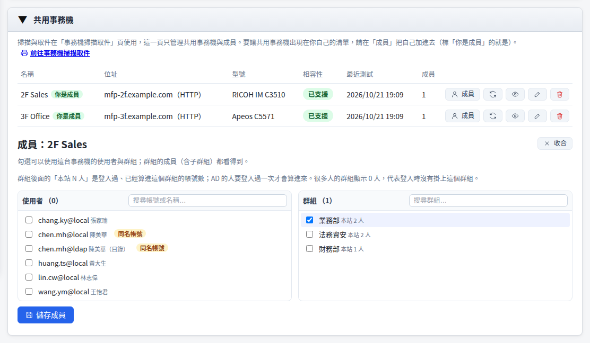
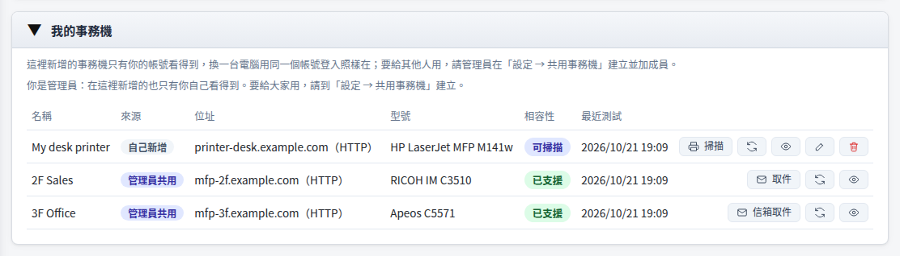
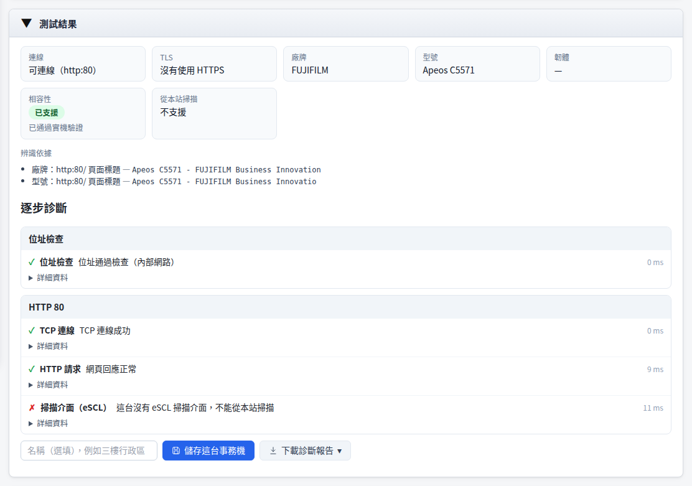
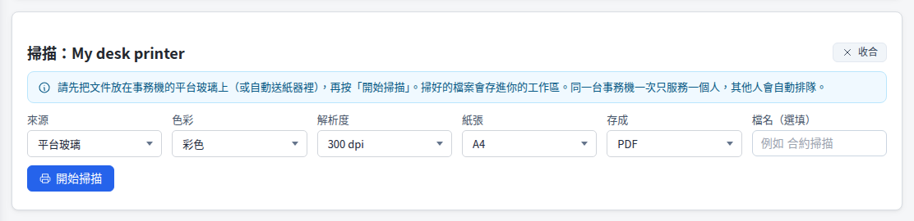
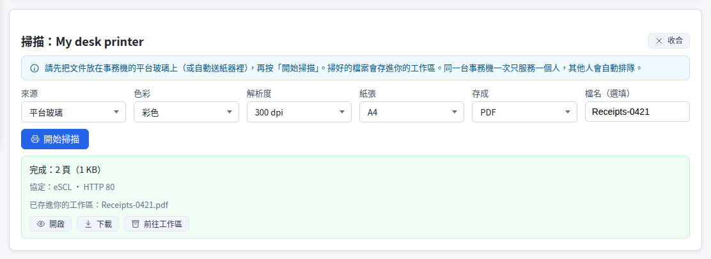
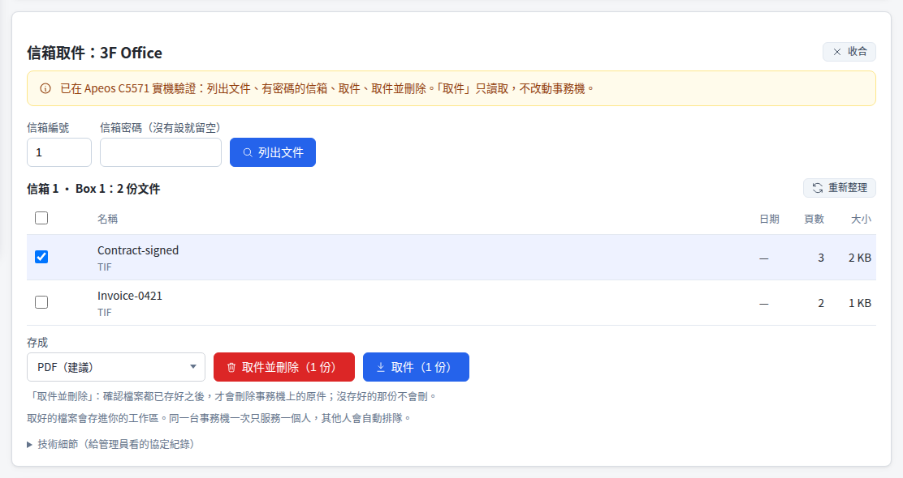
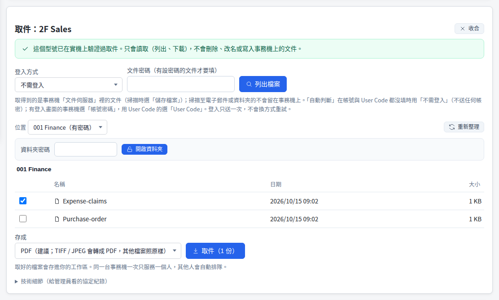
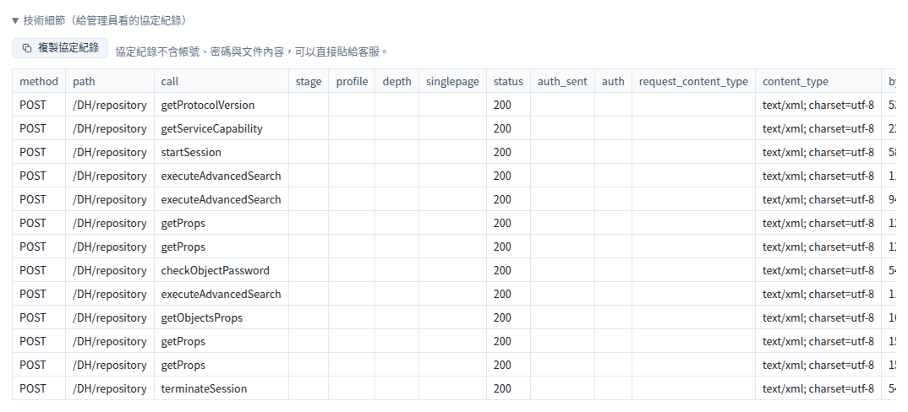

事務機掃描取件
掃描完的文件要送到自己手上，常見的三種做法各有難處：
每台事務機都要設定郵件伺服器與寄件帳號，維護麻煩；大型文件常超過附件或信箱容量上限，寄不出去。
共用區通常很多人都有權限，合約、人事資料這類機密文件放進去，誰都能開啟或取走。
隨身碟容易遺失，也可能帶進惡意程式；不少單位的資安規範已限制使用。
事務機掃描取件：在本站直接叫事務機掃描，或取回存在事務機裡的文件，檔案只存進你自己的工作區，接著做 OCR、合併、壓縮或翻譯。
運作方式
事務機、本站、你的工作區在同一個內網裡；檔案從事務機直接進工作區，不經過任何雲端服務。
- 設定共用事務機，按「成員」決定誰可以用（使用者、群組、組織單位）
- 決定要不要開放使用者自行輸入 IP 新增事務機（預設開放；關掉之後大家只用共用的）
- 連線測試的逐步診斷與診斷報告，追查連不上的原因
- 在「事務機掃描取件」頁看到自己新增的與管理員共用的事務機
- 管理員有開放時，也可以自己輸入事務機的 IP 新增，只有自己的帳號看得到
- 按「掃描」從本站叫事務機掃描，或按「取件」取回存在事務機裡的文件
- 取好的檔案在工作區，可以開啟、下載或接著用其他工具
管理員：設定共用事務機
在「設定 → 共用事務機」建立一次，指定成員之後，成員在自己的「事務機掃描取件」頁就看得到、用得到。
- 1
輸入位址、連線測試
輸入事務機的 IP 或主機名稱，按「連線測試」。只讀首頁與掃描介面的能力表，不送帳號密碼。
- 2
確認型號並儲存
看一下廠牌、型號與相容性，按「儲存為共用事務機」。
- 3
設定成員
按「成員」勾選使用者或群組。群組旁邊的「本站 N 人」是已經算進這個群組的帳號數。
- 4
把自己也加進去
管理員也要列在成員裡，這台才會出現在自己的「事務機掃描取件」頁（標「你是成員」）。

帳號@來源，同名的標「同名帳號」；群組旁標出本站人數。想讓大家只用共用的事務機：在同一頁的「使用設定」關掉「允許使用者自行新增事務機」。管理員自己不受影響。
使用者：我的事務機
清單上有你自己新增的（只有你的帳號看得到）與管理員共用的；相容性、可以做的事都標在同一列。

- 1
新增自己的事務機
在「新增事務機」輸入位址，按「連線測試」。
- 2
看結果
廠牌、型號、相容性、能不能從本站掃描，以及每一步的診斷。
- 3
儲存
取個好認的名稱後按「儲存這台事務機」；換一台電腦用同一個帳號登入照樣在。

從本站掃描
支援 eSCL 的事務機，清單上有「掃描」：在本站選好設定，事務機就開始掃，掃好的檔案直接進工作區。
- 1
放好文件
把文件放在平台玻璃上，或放進自動送紙器。
- 2
選設定
按「掃描」，選來源、色彩、解析度、紙張、存成 PDF 或 JPEG，可以先取檔名。
- 3
開始掃描
按「開始掃描」。有人在用時會自動排隊，畫面顯示前面還有幾件。
- 4
存進工作區
完成後可以開啟、下載，或到工作區接著處理。


取件：把存在事務機裡的文件取回來
先在事務機的面板上把文件存進信箱、文件伺服器或資料盒，再到本站按「取件」（FUJIFILM 是「信箱取件」）。
- 1
在事務機上存好
依廠牌在面板上選存到信箱、文件伺服器或資料盒（見下方「各廠牌」）。
- 2
填登入資訊
依面板顯示填信箱編號、帳號或 User Code。只送一次，錯了就停下來。
- 3
列出並選位置
按「列出檔案」；有資料夾的在「位置」切換，資料夾有密碼時輸入後按「開啟資料夾」。
- 4
勾選並取件
勾選要的文件，選存成 PDF（建議）後按「取件」，檔案存進工作區。



各廠牌的取件方式
「已支援」是在實機上驗證過取件的型號；「實驗功能」依原廠手冊或原廠工具的分析寫成，還沒在實機上驗證。
| 廠牌 | 方式 | 在事務機上怎麼存 | 要填什麼 | 支援狀況 |
|---|---|---|---|---|
| FUJIFILM | 機內信箱 | 在面板選「掃描至信箱」，存進指定的信箱 | 信箱編號；信箱有設密碼才填密碼 | 已支援：Apeos C5571（同系列 C7071、C6571、C4571、C3571、C3071、C2571）。可以「取件並刪除」 |
| RICOH | 文件伺服器 | 在面板選「掃描至資料夾」並「儲存檔案」，存進文件伺服器的共用資料夾或設備資料夾 | 登入方式（不需登入、帳號密碼、User Code）；資料夾有設密碼才填 | 已支援：IM C2000、IM C2010、IM C2510、IM C3500、IM C3510；其他型號是實驗功能 |
| KYOCERA | 文件匣 | 存進自訂資料盒（機型要有硬碟或 SSD） | 事務機帳號密碼；文件匣有設密碼才填 | 實驗功能。沒有自訂資料盒的機型，遙控資料盒目前只能列出 |
| Canon | Advanced Box | 存進 Advanced Box 的共用空間或個人空間 | 事務機帳號密碼 | 實驗功能（WebDAV 或 SMB） |
| Konica Minolta | 公用信箱 | 存進公用信箱 | 信箱的帳號密碼 | 實驗功能（SMB） |
| SHARP | NAS 資料夾 | 存進事務機的 NAS 資料夾 | 事務機帳號密碼 | 實驗功能（SMB） |
| 支援 eSCL 的機型 | 從本站掃描 | 不用先存，直接在本站按「掃描」 | 不用帳號密碼 | 可以掃描（HP、Epson、Brother 等支援 eSCL 的機型） |
安全與隱私
事務機上常有合約、薪資單這類文件，所以每一步都照最保守的方式做。
事務機的位址只能是內部網路；連線測試只讀首頁與掃描介面的能力表，不送任何帳號密碼。
取件時填的帳號密碼只用在這一次；記住的是信箱編號、信任的憑證這類設定，跟著帳號存，不含密碼。
帳號、信箱或資料夾密碼錯了就停下來，不換方式重試，避免連續輸錯讓事務機鎖住帳號。
取件只列出、下載，不刪除、不改名；只有 FUJIFILM 可以選「取件並刪除」，而且確認存好才刪。
同一台事務機一次只服務一個人，其他人自動排隊，不會互相打斷。
誰在什麼時候對哪一台掃描、取件、刪了哪幾份，都寫進稽核記錄（不記密碼與文件內容）。
常見問題
還是遇到問題時，先看這幾個。
看不到管理員共用的事務機
先看頁面上的「目前登入的帳號」：同一個人的 AD、SSO、本機帳號是不同帳號，成員要加的是你實際登入的那一個。管理員也可以把你所在的群組加進成員；群組旁邊顯示「本站 0 人」代表登入時沒有掛上這個群組。改完切回分頁就會更新。
連線測試失敗或列不出檔案
看連線測試的逐步診斷，哪一步失敗就從那一步查；也可以下載診斷報告（txt、md、json、html、pdf）給管理員。KYOCERA 要在事務機上啟用 9091 或 9090 連接埠的文件服務；FUJIFILM 某個連接埠回 406 時，換另一個連線方式。
RICOH 的資料夾要密碼
在「位置」選那個資料夾，輸入資料夾密碼後按「開啟資料夾」。密碼錯了不會自動重試，確認後再輸入一次。
清單上標「可重新測試」
辨識規則更新過，這台之前沒認出型號。按一次「重新測試」就會用新的規則判斷。
取好的檔案在哪裡
在你的工作區，可以開啟、下載，或在其他工具裡直接選工作區的檔案。保留時間由管理員設定（預設 24 小時）。
要回報問題
展開「技術細節」，按「複製協定紀錄」貼給客服。協定紀錄不含帳號、密碼與文件內容。
要用程式呼叫：見 API 使用手冊。